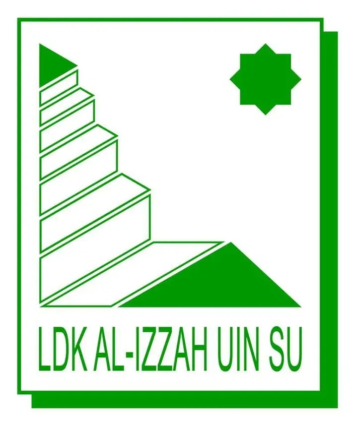

Petunjuk Pelaksanaan • Technical Meeting
FSLDKD XV SUMATERA UTARA 2026
Forum Silaturahmi Lembaga Dakwah Kampus Daerah XV Sumatera Utara
Selamat datang kepada seluruh delegasi di Forum Silaturahim Lembaga Dakwah Kampus Daerah (FSLDKD) XV Sumatera Utara. Mohon perhatikan detail pelaksanaan berikut untuk kelancaran bersama.
Tuan Rumah Pelaksana

UKM LDK AL-IZZAH
Universitas Islam Negeri Sumatera Utara
Waktu Pelaksanaan
Jum'at - Ahad, 27 - 29 Nov 2026
Pembukaan Jum'at, 27 November 2026 (07.00 WIB)Lokasi Kegiatan
BPSDM Sumut
Jl. Ngalengko No. 1, Perintis, Kec. Medan Timur, Kota Medan 20236 Buka Google MapsSifat Forum
Forum Internal LDK
Seluruh sidang bersifat tertutup, sedangkan seminar dan seremoni boleh terbuka.Tujuan Kegiatan
- Pengesahan LPJ Puskomda.
- Pemilihan Puskomda dan Rapimda.
- Empat seminar utama.
- Penguatan ukhuwah antar-LDK.
Deskripsi Kegiatan Harian
- Hari 1 (Jum'at, 27 Nov 2026): Fokus pada kedatangan dan registrasi delegasi, pembukaan resmi (Opening Ceremony), Seminar Kebangsaan, dan Penyerahan Forum.
- Hari 2 (Sabtu, 28 Nov 2026): Agenda padat yang meliputi Seminar Kepemimpinan, Sidang Pleno Komisi, Pengesahan Sidang Pleno Komisi FSLDK, Sidang Pemilihan Ketua Umum FSLDK 2027-2028, Pemilihan Tuan Rumah RAPIMDA (pengumuman hasil sidang, pelantikan Puskomda terpilih, serah terima), Seminar Kreativitas LDK, Grand Closing, serta Malam Keakraban.
- Hari 3 (Ahad, 29 Nov 2026): Kegiatan berisi Outbound, Sosialisasi Perda, check-out penginapan, foto bersama, dan kepulangan delegasi.
Susunan Acara Resmi
Rundown Kegiatan Lengkap
| Waktu | Durasi | Kegiatan (Jum'at, 27 November 2026) |
|---|---|---|
| 07.00-12.00 | 5 Jam | Kedatangan, Registrasi, dan check-in delegasi (LO mendampingi), Dhuha |
| 12.00-13.00 | 1 Jam | ISHOMA (Dzuhur) |
| 13.00-13.30 | 30 Menit | Mobilisasi Peserta Ke Aula |
| 13.30-15.30 | 2 Jam | Opening Ceremony: Pembukaan Resmi, Menyanyikan Lagu Indonesia Raya & Mars FSLDK, Tilawah, Kata Sambutan dari (Rektor/Wakil Rektor UIN Sumatera Utara, Ketua Panitia, Ketua Umum FSLDK Sumut, dan Pembina FSLDK Sumut), Doa. |
| 15.30-16.00 | 30 Menit | Shalat Ashar |
| 16.00-18.00 | 2 Jam | Seminar 1 "Nasionalisme dalam Bingkai Dakwah, Pemuda Muslim sebagai Nakhoda Bangsa" |
| 18.00-20.00 | 2 Jam | ISHOMATIL |
| 20.00-22.00 | 2 Jam | Penyerahan Forum dari Panitia Ke Pimpinan Sidang Sementara (Pembahasan Tata Tertib Persidangan) |
| 22.00-23.00 | 1 Jam | Mobilisasi ke Penginapan |
| 23.00-04.30 | 5 Jam 30 Menit | Istirahat |
| Waktu | Durasi | Kegiatan (Sabtu, 28 November 2026) |
|---|---|---|
| 04.30-05.45 | 1 Jam 15 Menit | Qiyamullail (Opsional) dan Shalat Shubuh Berjamaah, Kultum, Al-Matsurat Pagi |
| 05.45-07.45 | 2 Jam | Persiapan Pribadi, Mobilisasi Peserta Ke Aula, Dhuha, Riyadhoh Ringan dan Sarapan Pagi |
| 07.45-08.00 | 15 Menit | Pembukaan Forum oleh Pimpinan Sidang |
| 08.00-12.00 | 4 Jam | Sidang Pleno Komisi dan Pengesahan Sidang Pleno Komisi FSLDK |
| 12.00-13.15 | 1 Jam 30 Menit | ISHOMA (Dzuhur) |
| 13.15-13.30 | 15 Menit | Ice Breaking |
| 13.30-15.30 | 2 Jam | Seminar 2 "Pemimpin Muda yang Tangguh, Menjaga Mental dan Amanah dalam Dakwah Kampus" |
| 15.30-16.00 | 30 Menit | Shalat Ashar |
| 16.00-18.00 | 2 Jam | Pemilihan Ketua Umum FSLDK 2027-2028 dan Pemilihan Tuan Rumah RAPIMDA |
| 18.00-20.00 | 2 Jam | ISHOMATIL |
| 20.00-22.00 | 2 Jam | Seminar 3 "Dari Konten ke Gerakan, Membangun LDK yang Profesional" |
| 22.00-23.00 | 1 Jam | Grand Closing & Mobilisasi ke Penginapan |
| 23.00-04.30 | 5 Jam 30 Menit | Istirahat |
| Waktu | Durasi | Kegiatan (Ahad, 29 November 2026) |
|---|---|---|
| 04.30-05.45 | 1 Jam 15 Menit | Qiyamullail (Opsional) dan Shalat Shubuh Berjamaah, Kultum, Al-Matsurat Pagi |
| 05.45-07.45 | 2 Jam | Mobilisasi Peserta Ke Area Outbound, Dhuha, Riyadhoh Ringan dan Sarapan Pagi |
| 07.45-10.00 | 2 Jam 15 Menit | Outbound |
| 10.00-11.00 | 1 Jam | Persiapan Pribadi (Bersih-Bersih) |
| 11.00-12.15 | 1 Jam 15 Menit | Setoran dan Pengumpulan Amalan Yaumiyah |
| 12.15-13.15 | 1 Jam 15 Menit | ISHOMA (Dzuhur) |
| 13.15-13.30 | 15 Menit | Ice Breaking |
| 13.30-15.30 | 2 Jam | Seminar 4 "Jangan Wariskan Sekadar Nama Organisasi, Wariskan Nilai Perjuangan dan Generasi Yang Siap Melanjutkannya" |
| 15.30-16.00 | 30 Menit | Sholat Ashar |
| 16.00-18.00 | 2 Jam | Check-out dan Kepulangan delegasi (LO mendampingi) |
Catatan Jadwal: Rundown bersifat sementara dan perubahan diumumkan melalui Liaison Officer (LO).
Ketentuan Pakaian
Panduan Pakaian (Dresscode)
| Hari / Agenda | Ikhwan | Akhwat |
|---|---|---|
| Hari 1 (Jum'at) | Jas Almamater Kampus + Celana Keper Hitam + Baju Kemeja Putih + Sepatu. | Jas Almamater Kampus + Rok Hitam + Baju Kemeja Putih + Jilbab Hitam + Sepatu. |
| Hari 2 (Sabtu) | PDH/Jaket LDK + Celana Keper Hitam + Sepatu. | PDH/Jaket LDK + Rok Hitam + (Jilbab disesuaikan dengan PDH/Jaket masing-masing LDK) + Sepatu. |
| Hari 3 (Ahad) | Baju Kaos Hitam + Celana Training + Sepatu. | Gamis Hitam + Jilbab Biru + Sepatu. |
| DC Outbound | Baju Kaos Hitam + Celana Training + Sepatu. | Pakaian Bebas/Kaos/Tidak Ditentukan, Tetapi harus (Sopan, Menutup Aurat, Dilarang Pakai Celana Bagi Yang Akhwat) + Jilbab Biru + Minset Tangan (Opsional) + Sepatu. |
| Hari / Agenda | Ikhwan | Akhwat |
|---|---|---|
| Hari 1 (Jum'at) | Kemeja Hitam + Celana Coksu/Cream + Sepatu. | Gamis Hitam + Jilbab Maroon + Sepatu. |
| Hari 2 (Sabtu) | PDH/Jaket LDK + Celana Keper Hitam + Sepatu. | PDH/Jaket LDK + Jilbab Army + Sepatu. |
| Hari 3 (Ahad) | Batik + Celana Keper Hitam + Sepatu. | Batik + Jilbab Hitam + Sepatu. |
| DC Outbound | Baju Kaos Hitam + Celana Training + Sepatu. | Pakaian Bebas/Kaos/Tidak Ditentukan, Tetapi harus (Sopan, Menutup Aurat, Dilarang Pakai Celana Bagi Yang Akhwat) + Jilbab Hitam + Minset Tangan (Opsional) + Sepatu. |
Perhatian: Panitia dan Peserta wajib menggunakan ID Card (dipakai setiap hari).
Disiplin & Etika Forum
Tata Tertib Peserta
Ketepatan Waktu
Peserta diharapkan hadir di lokasi 15 menit sebelum durasi mobilisasi berakhir.
Kedisiplinan
Wajib mengikuti seluruh rangkaian acara, termasuk sidang yang berlangsung hingga malam hari.
Etika
Menjaga kebersihan, kesopanan, dan adab pergaulan ikhwan dan akhwat.
Istirahat
Waktu istirahat (23:00 - 04:30) wajib digunakan di penginapan masing-masing.
Ketertiban
Peserta DILARANG mengganggu sesi resmi, termasuk berbicara atau bermain gawai.
Kerahasiaan Sidang
Isi sidang tertutup tidak boleh didokumentasikan atau disebarkan tanpa izin.
Klik Item Untuk Menandai Kesiapan
Barang Bawaan Wajib
Pakaian
Sesuai dresscode dan pakaian ganti secukupnya.
Perlengkapan Ibadah
Termasuk Al-Qur'an, Al-Matsurat, dan perlengkapan lainnya untuk menunjang agenda ISHOMA yang terjadwal.
Alat Tulis, Gadget, Tumbler & Alat Mandi
Untuk keperluan mencatat selama rangkaian acara dan kebutuhan pribadi.
Dokumen & Obat Pribadi
Obat-obatan Pribadi, KTM, Kartu Identitas Lainnya, dan Surat Mandat Delegasi.
Bendera LDK
Membawa Bendera masing-masing LDK.
Note: Diharapkan kepada seluruh peserta dimohon untuk menjaga barang bawaan masing-masing. Panitia tidak bertanggung jawab atas kehilangan barang. Syukron atas perhatiannya.
Prosedur Lapangan
Kesehatan, LO & Petunjuk Penting
Mekanisme Kesehatan
- Kondisi Fisik: Peserta wajib berangkat dalam kondisi sehat.
- Tim Medis: Panitia menyediakan posko kesehatan di venue dan penginapan.
- Obat Pribadi: Peserta dengan riwayat penyakit khusus wajib membawa obat pribadi dan melapor kepada LO masing-masing.
Mekanisme Liaison Officer (LO)
- Pendampingan: Setiap delegasi didampingi oleh seorang LO sejak sebelum berangkat, yang bertugas sebagai jembatan informasi antara peserta dan panitia.
- Komunikasi: Peserta wajib masuk ke dalam grup komunikasi yang dibuat oleh LO dan merespons instruksi terkait waktu kumpul.
Petunjuk Penting Lainnya
- Mobilisasi: Pergerakan antar venue dan penginapan dilakukan bersama-sama sesuai jadwal yang diatur panitia.
- Check Out: Check-out penginapan dilakukan pada hari Senin pagi s/d siang sebelum Closing Ceremony.
- Perubahan Jadwal: Rundown bersifat sementara dan perubahan diumumkan melalui LO.
Pusat Koordinasi
Kontak Panitia Pelaksana
"Semoga Allah memberikan kelancaran dan kesehatan bagi seluruh pejuang dakwah di FSLDKD XV Sumatera Utara!"